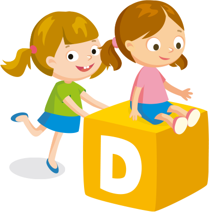
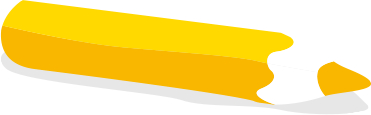

Eğitim Anlayışımız
Saysen Anaokulları gelişim alanlarına [sosyal gelişim, dil (sözel) gelişim, özbakım becerileri gelişimi, bilişsel gelişim ve fiziksel gelişim] ilişkin farklı yaş yapılarına uygun (3 yaş, 4 yaş, 5 yaş ve 6 yaş) deneyim ortamı sağlar. Çocuğun yaş (dönem) ve gelişim özellikleriyle bireysel farklılıkları göz önünde bulundurularak gözlemleyen, değerlendiren ve ihtiyaçlarını belirleyip destekleyen bir eğitim anlayışı gözetilir. Çocuğa davranış yönetimi olarak ‘’Pozitif Disiplin Yöntemi’’ temel olarak alınmış ve tüm eğitim sistemi bu temel anlayış üzerine inşa edilmiştir.
Pozitif Disiplin, çocukların kendi hareketlerini kontrol edebilmelerine ve hareketlerini çözebilmelerine yardımcı olan bir yönetim tekniği olduğu kadar çocukların toplumsal kuralları öğrenirken kendileri hakkında iyi şeyler hissetmelerine de olanak sağlamaktadır.
Bu anlayışa paralel olarak okul öncesi eğitimde 5 gelişim alanında ve 8 çoklu zekada (çoklu zeka kuramı) gerçekleştirilen faaliyetler, etkinlikler, aktiviteler, atölye çalışmaları, deneyler, geziler ve gözlemler eğitim planlarına tüm yıl boyunca yerleştirilmiştir.
Geçtiğimiz yıllarda Pozitif Psikoloji Danışmanlık ve Beyin Aktivite Merkezi Kurucusu Psikolog Gülgün Sharafat’tan ‘’Bütünsel Beyin Öğrenme Eğitimi’’ alan öğretmenlerimiz, Okul Psikoloğumuz eşliğinde , Okul Koordinatörlerimiz Serap Esen ve Burcu Çetiner yönetiminde günlük eğitim programımıza ek olarak düzenli bir biçimde Bütünsel Beyin Öğrenmesi Eğitimini öğrencilerimize vermektedir.
Okullarımızda; klasik öğrenme (öğrenenin pasif konumda olduğu öğrenme modelleri) yerine ‘’Aktif Öğrenme’’ yöntem ve teknikleri ile öğrencilere eğitim verilmektedir. Sınıflarımız; görsel, işitsel ve dokunsal algıya yönelik, 3 tip öğrenme modülüne uygun olarak düzenlenmiş ve pratik kullanıma uygun materyaller, görseller, araç ve gereçler eşliğinde yaş gruplarına uygun oyuncaklar ile zenginleştirilmiştir.
 